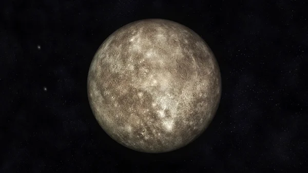
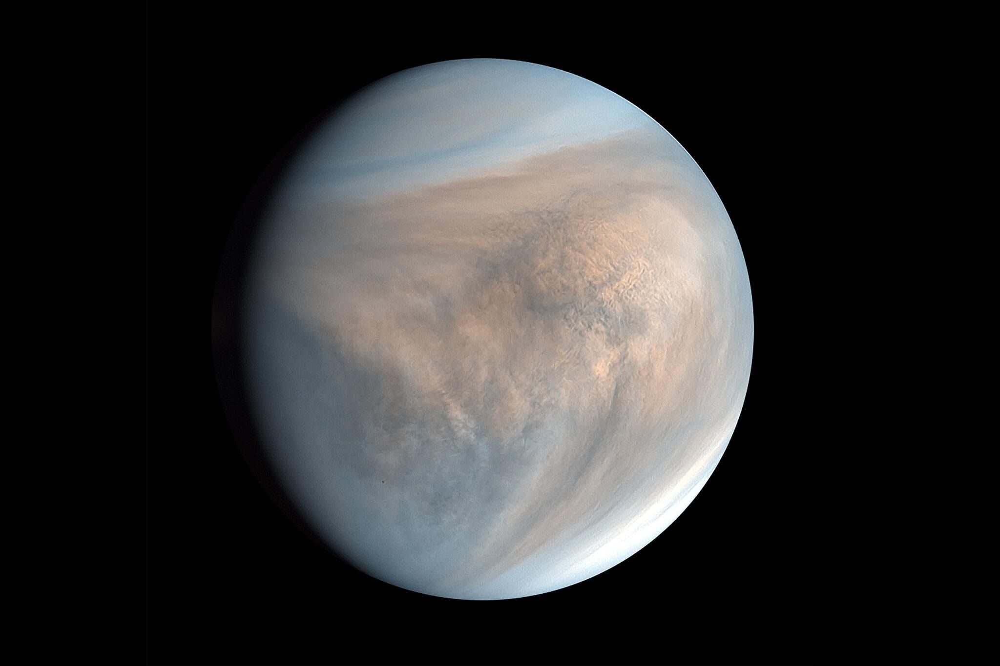
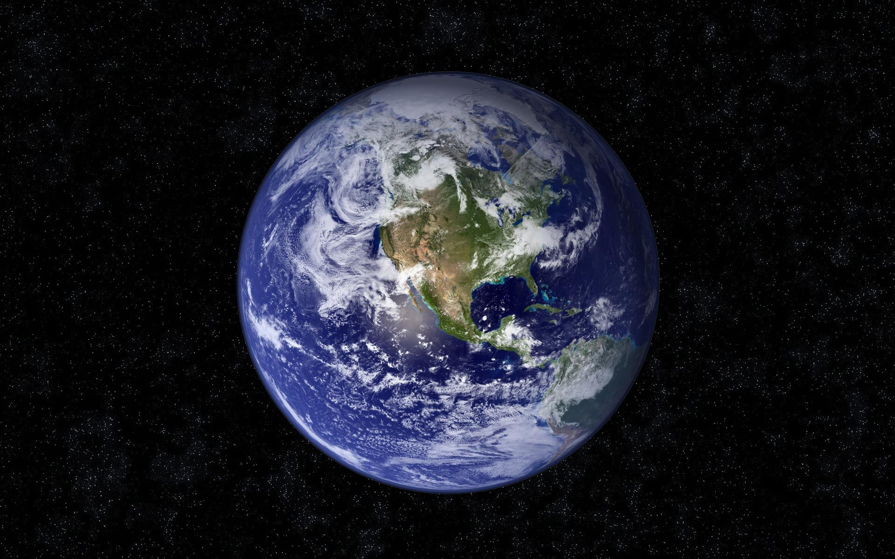
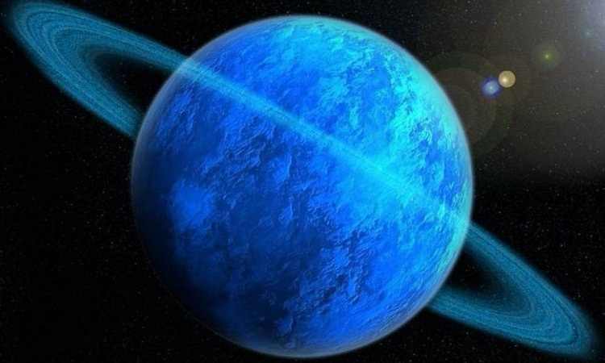
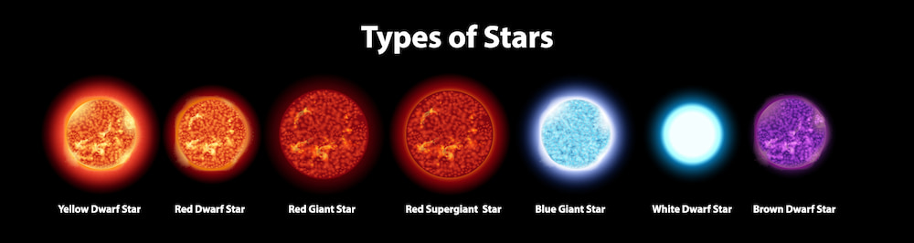

Все про космос
Планети
Плане́та (лат. planētae від грец. πλανήτης — той,
що блукає) — кулясте не самосвітне тіло, яке обертається
навколо Сонця чи іншої зорі. Орбіта цього обертання дуже
близька до еліпса. За найсучаснішим означенням, плане́тою
сонячної системи вважають астрономічний об'єкт, котрий
обертається навколо Сонця, має достатню масу для того,
щоби під дією власної гравітації набути кулястої форми
та має «вичищену околицю», тобто, переважає на своїй
орбіті. Ті астрономічні об'єкти, що відповідають двом
першим умовам, але не відповідають третій, називають
карликовими планетами. Планети, котрі перебувають поза
межами Сонячної системи, називають екзопланетами.
Планети обертаються навколо зірок і видимі завдяки їх
освітленню випромінюванням зірок.
Порядок розміщення планет сонячної системи

- Меркурій

Меркурій
Найближча до сонця планета. Маса
становить 20% від маси Землі, він
утримує тільки розріджену атмосферу,
переважно з пари натрію. Його ядро
охололо і набуло твердого стану в
результаті чого він стиснувся і його
поверхня потріскалась.
- Венера

Венера
Друга від Сонця та шоста за розміром
планета Сонячної системи. Названа на
честь Венери, богині кохання з римського
пантеону. Це єдина з восьми планет
Сонячної системи, яка отримала назву на
честь жіночого божества.
- Земля

Земля
Земля являє собою еліпсоїд з довжиною
кола приблизно 40 000 км. Це найщільніша
планета Сонячної системи. Із чотирьох
твердих планет вона найбільша і
наймасивніша.
- Марс
Здавна Марс був окутаний міфами та пеленою
таємничості, поява червоної планети на
небосхилі віщувала наближення війни. Через
свій червоний відтінок безліч древніх
народів вважали, що Марс вкритий кров'ю і
саме тому він був названий на честь
римського бога війни — Марса.Істина природа
забарвлення планети пов'язана з великою
кількістю оксиду заліза на його поверхні.
Іншими словами на Марсі така велика
кількість заліза, що планета буквально
покрита іржею. Відтінок планети змінюється
залежно від пір року, яких на Марсі також
чотири.
- Юпітер
Не секрет, що Юпітер – найбільша планета
Сонячної системи. Маса Юпітера в 318 разів
більша, ніж Землі. Насправді Юпітер у 2,5 рази
масивніший, ніж усі інші планети Сонячної
системи разом взяті. Ось справді цікава річ …
Якби планета Юпітер стала більш масивною, вона
насправді була би меньшою. Додаткова маса
фактично зробить планету більш щільною.
Астрономи вважають, що Юпітер міг би в 4 рази
перевищити свою поточну масу і все ще залишатися
приблизно однакового розміру.
Юпітер, незважаючи на всі його розміри та масу,
швидко рухається. Справді, з обертальної
швидкістю 12,6 км/с або 45300 км / год (28148
миль/год), планеті потрибно близько 10 години,
щоб завершити повний оборот навколо своєї осі. А
оскільки вона так швидко крутиться, то планета
трохи сплюснулася на полюсах.
Коли люди думають про кільцеві системи, Сатурн
природно приходить першим на думку. Але по
правді, і Уран, і Юпітер мають власні кільцеві
системи. Кільця Юпітера слабкі. Кільця Юпітера
складаються з трьох основних сегментів –
внутрішнього кола частинок, відомих як ореол,
відносно яскравого основного кільця та
зовнішнього кільця.
- Сатурн
Сатурн – шоста планета від Сонця і друга за
величиною планета в нашій Сонячній системі. Як і
Юпітер, планета Сатурн є газовим гігантом і
складається з подібних до Юпітера газів,
включаючи водень, гелій та метан.
Кільця Сатурна розділені на 7 груп, названих за
алфавітом у порядку їх відкриття (Назовні від
Сатурна; D, C, B, A, F, G та E). Кільце F
утримується на двома супутниками Сатурна, Прометеєм
і Пандорою, вони називаються “пастушними
супутниками”. Інші супутники відповідають за
створення поділів у кільцях, а також за їх
пасірування.
- Уран

Уран
Найхолодніша планета Сонячної системи.Як
і всі гігантські планети, Уран має свої
супутникі. В даний час астрономи
підтвердили існування 27 природних
супутників.Пора року на Урані триває
один довгий день – 42 роки.
- Нептун
Діаметр Нептуна становить 49 тисяч кілометрів,
його маса в 17 разів перевищує масу Землі. За
своєю внутрішньою будовою планета нагадує Уран.
У той час як атмосфера Нептуна в основному
складається з водню та гелію, в його мантії
домінують вода, метан та аміак. У центрі
знаходиться кам’яно-крижане ядро. Астрономи
виділяють такі об’єкти в окрему категорію
крижаних гігантів.
Що таке зорі?
Зорі – це масивні, світні сфери плазми, які випромінюють
енергію завдяки ядерному синтезу. Вони є найбільш
фундаментальними об’єктами у Всесвіті, відповідальними
за створення та підтримку життя на Землі. У видимому
Всесвіті існують мільярди зірок, кожна з яких має свої
унікальні характеристики та властивості.
Різні типи зірок
У Всесвіті існує багато різних типів зірок, від
маленьких, тьмяних червоних карликів до масивних,
яскравих надгігантів. Класифікація зірок базується на
їхньому розмірі, температурі та яскравості.
Найпоширенішими типами зір є зорі головної
послідовності, які перебувають у стабільному стані і в
їхніх ядрах відбувається синтез водню на гелій.

Різні типи зірок
Інші типи зірок включають червоні гіганти, які вичерпали
своє водневе паливо і тепер перетворюють гелій на більш
важкі елементи; білі карлики, які є залишками малих або
середніх зірок, що вичерпали своє паливо; і нейтронні
зірки, які є неймовірно щільними залишками вибухів
наднових зірок.
Як утворюються зорі
Перед тим як ми роглянемо цікаві факти про зорі, давайте
дізнаємося як вони утворюються. Зірки утворюються з хмар
газу та пилу, які руйнуються під дією власної
гравітації. Коли хмара колапсує, вона нагрівається і
починає обертатися, утворюючи протозірку. Коли
протозірка досягає певної температури і тиску,
починається ядерний синтез, і народжується зоря.
У Всесвіті скрізь однакова температура
Тепло вогненної кулі Великого Вибуху розлилося у
Всесвіті. Йому не було куди діватись, тож воно все ще
навколо нас сьогодні.Дивно те, що його температура –270
° C, найнижча можлива температура – по суті однакова
скрізь. Астрономи стверджуючи, що на початку Всесвіт був
набагато меншим, ніж очікувалося, тому тепло поширилося
легко. Щоб дістатись від цього меншого розміру до
теперішнього, Всесвіту довелося пройти через початковий
сплеск надшвидкого розширення, відомий як інфляція.Щоб
дістатись від цього меншого розміру до теперішнього,
Всесвіту довелося пройти через початковий сплеск
надшвидкого розширення, відомий як інфляція.
В основі кожної галактики лежить надмасивна чорна діра
Активні галактики часто викачують у 100 разів більше
світла, ніж звичайна галактика. З відкриттям в 1963 р.
Квазарів стало ясно, що світло походить не від зірок, а
від центральної області, меншої за Сонячну систему.
Єдиним можливим джерелом енергії є речовина, нагріта до
розжарювання, коли вона закручується вниз до гігантської
чорної діри, яка в 50 мільярдів перевищує масу Сонця. У
1990-х роках космічний телескоп Хаббла виявив, що, хоча
активні галактики становлять лише близько 1% галактик,
надмасивні чорні діри не є аномалією.Темна енергія і
темна матерія: явища, які треба вивчити.Майже в кожній
галактиці, включаючи наш Чумацький Шлях, є одна,чорна
дира.
95% Всесвіту невидимі
Існує настільки дивовижне відкриття, що воно ще не
потекло у свідомість більшості вчених: все, що вивчала
наука за останні 350 років, є лише незначним вивченням
Всесвіту.Лише близько 4,9% масової енергії Всесвіту
становлять атоми: з того, з чого зроблені ви, я, зірки
та галактики (і з цього лише половина була помічена за
допомогою телескопів). Близько 26,8% космічної масової
енергії – це невидима темна речовина, виявлена, оскільки
вона впливає своєю силою тяжіння на видимі речовини.
Кандидати на те, що утворює темну речовину, включають
досі невідомі субатомні частинки та чорні діри, утворені
у Великому Вибуху.Але, крім темної матерії, існує і
темна енергія, на частку якої припадає 68,3% масової
енергії Всесвіту.Вона невидима, заповнює весь простір і
прискорює космічне розширення.